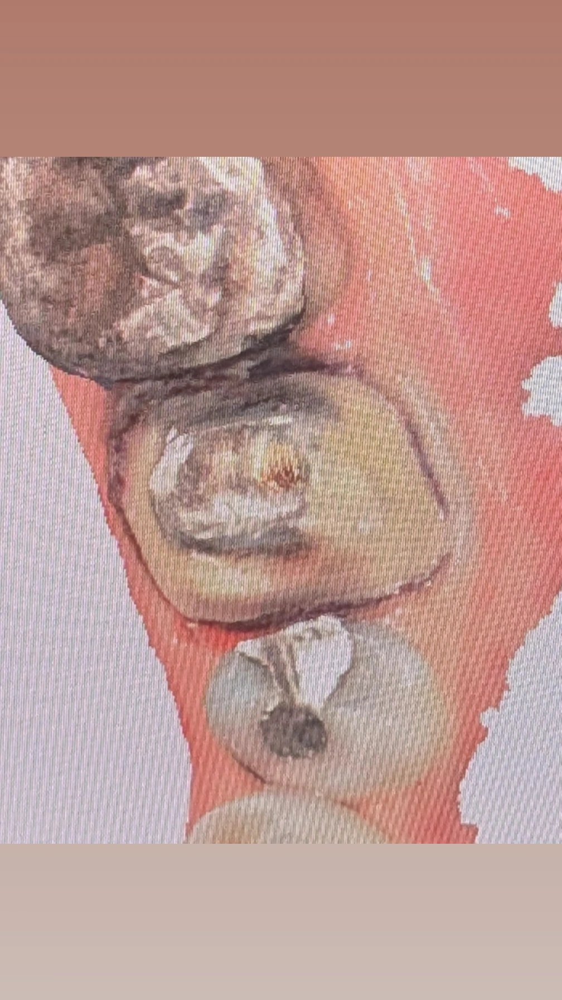

Insight 49 — روکش روی دندونِ آمالگامدار و پوسیدگیِ جامانده در پروگزیمال
تاریخ انتشار:
آخرین بازبینی:
English

توضیح بالینی
دندانِ آمالگامدار برای روکش آمده و حینِ تراش در یکی از پروگزیمالها پوسیدگیِ جامانده میبینی؛ در پوسیدگیِ محدود بهجای خالیکردنِ کلِ آمالگام، همان ناحیه را واردِ باکسِ پروگزیمال کن — باکس خودش بخشی از پروتکلِ تراشِ روکش است، پس پوسیدگی برداشته میشود بیآنکه از چهارچوبِ تراش خارج شوی یا کاری عجیب انجام دهی
-
شرح مسئله
دندانی که قبلاً با آمالگام ترمیم شده — حالا خودمان ترمیمش کرده باشیم یا کسِ دیگری — برای روکش آمده است. اینکه این بیمار و این دندان اصلاً کاندیدِ روکش هستند یا نه، یک بحثِ جداست و اینجا کاری به آن نداریم؛ فرض را بر این میگذاریم که تصمیم به روکش گرفته شده و سرِ کارِ تراش هستیم.
موقعِ تراشِ روکش متوجه میشوی که در یکی از پروگزیمالها هنوز بافتِ پوسیده باقی مانده و جا گذاشته شده است. سؤالِ واقعی همینجاست: حالا که این پوسیدگیِ جامانده را دیدیم، چه تصمیمِ کلینیکی بگیریم؟ -
دو راهی که جلوی پایت است
راهِ اول، همان واکنشِ پیشفرضِ خیلیهاست: آمالگام را کامل خارج کن و پایه را از نو بساز. منطقش هم روشن است — همهی پوسیدگی و کلِ ترمیمِ قدیمی برداشته میشود و با یک کورِ تازه از صفر شروع میکنی.
راهِ دوم این است که به خودِ تراشِ روکش تکیه کنی. باکسِ پروگزیمال بخشی از پروتکلِ تراشِ روکش است؛ پس میتوانی همان ناحیهی پروگزیمالِ پوسیده را واردِ باکس کنی تا پوسیدگی، در چهارچوبِ خودِ تراش و بدونِ کاری خارج از روال، برداشته شود. -
چرا این تصمیم مهم است
خارجکردنِ کلِ آمالگام بیهزینه نیست. خودِ این خارجکردن میتواند آسیبزننده باشد و مشکلاتِ بعدی ایجاد کند؛ بعضی وقتها ضررِ برداشتنِ آمالگام از حفظش بیشتر است.
نکته اینجاست که گذاشتنِ باکس برای حذفِ آن پوسیدگی، کاری خارج از چهارچوبِ تراشِ روکش نیست؛ باکسِ پروگزیمال بخشی از خودِ پروتکلِ تراش است و چیزِ عجیب یا فرااز روال بهحساب نمیآید. اگر پوسیدگی محدود باشد، حذفِ پوسیدگی از همین مسیر، ما را از چهارچوبِ کار بیرون نمیبَرد و مجبورمان نمیکند پایهی سالم را بیجهت خراب کنیم. -
نکته کلیدی — راه حل:
اگر پوسیدگی محدود باشد، بهجای خالیکردنِ کلِ آمالگام، آن ناحیهی پروگزیمالِ پوسیده را واردِ باکس کن.
باکسِ پروگزیمال خودش بخشی از پروتکلِ تراشِ روکش است، پس با گذاشتنِ باکس، پوسیدگی برداشته میشود بیآنکه از چهارچوبِ تراش خارج شویم یا کاری عجیب و فرااز روال انجام دهیم.
آمالگام را تنها وقتی کامل خارج کن که پوسیدگی فراتر از حدِ باکس رفته باشد؛ در پوسیدگیِ محدود، خارجکردنِ کلِ آمالگام میتواند بیش از آنکه کمک کند آسیب بزند.
ملاکِ تصمیم، وسعتِ پوسیدهی جامانده است نه عادتِ همیشگی به برداشتنِ کلِ ترمیمِ قدیمی.
محتوای این صفحه برای استفادهٔ آموزشی دندانپزشکان و دانشجویان دندانپزشکی تهیه شده است.